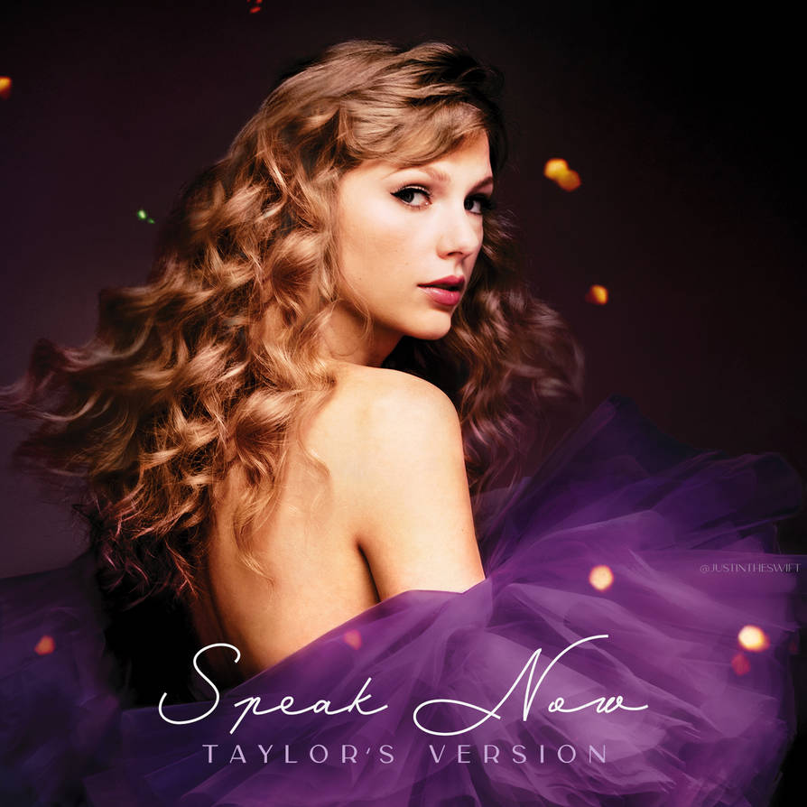
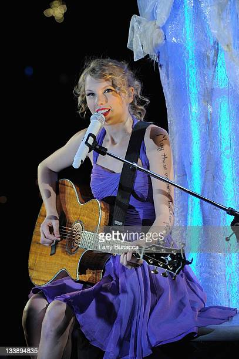

Explorando "Speak Now": Jornada Musical de Taylor Swift
O terceiro álbum de estúdio de Taylor Swift, "Speak Now", lançado em 2010, marcou uma virada significativa em sua carreira. O álbum mostrou o crescimento de Swift como compositora e sua capacidade de capturar experiências pessoais em sua música.
O álbum apresenta sucessos no topo das paradas como "Mine", "Back to December" e "Mean". Cada música oferece um vislumbre das emoções e experiências de Swift naquela época.
O que torna "Speak Now" particularmente especial é que Swift escreveu todas as músicas do álbum sozinha, mostrando sua proeza de contar histórias. As músicas abordam temas de desgosto, amor e autodescoberta.
O sucesso de "Speak Now" solidificou o status de Taylor Swift como uma das artistas mais proeminentes da indústria. A profundidade emocional do álbum e as letras relacionáveis ressoaram com os fãs ao redor do mundo.
Mesmo anos após seu lançamento, "Speak Now" continua sendo um álbum amado entre os fãs dedicados de Swift, uma prova de seu apelo atemporal e da influência duradoura do artista.